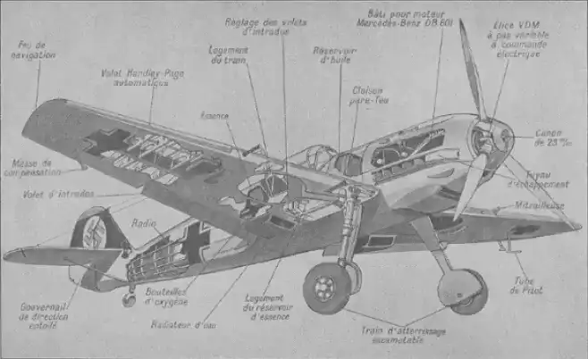

Progès des voyages
L’origine de la création
Pendant des siècles, les philosophes ont discuté des mérites des voyages à des fins éducatives et de croissance personnelle. Ils ont également débattu de la question de savoir si voyager faisait de vous une meilleure personne ou vous exposait simplement à de nouvelles idées. Alors que certaines personnes critiquent les voyages longue distance comme improductifs , il est indéniable que voir de nouveaux endroits élargit l'esprit. De plus, les voyages aident les gens à apprendre une variété de langues et de coutumes, ce qui les aide à s'acclimater à de nouveaux environnements.
Des voyages compliquées
Avant l'invention de l'avion, les voyages longue distance étaient difficiles pour la classe moyenne en raison des contraintes de coût et de temps. Par exemple, les citoyens américains n'avaient que de courts voyages à l'étranger via Ellis Island au début du XXe siècle. Même alors, les voyageurs avaient peu d'options pour l'exploration à longue distance, à l'exception des voyages en mer ou de la marche à travers les frontières du pays. De plus, les trains n'allaient que jusqu'aux villes avant de s'arrêter; par conséquent, ils n'ont pas pu emmener les gens aussi loin que les destinations souhaitées.
Une gare quelconque
De nouvelles technologies
Aujourd'hui, les gens peuvent voyager loin et rapidement grâce à la technologie moderne. La technologie des communications permet aux personnes de différentes parties du monde de se parler sans que les barrières géographiques ne les ralentissent. De plus, les véhicules sont désormais suffisamment rapides pour franchir les frontières nationales sans s'arrêter. De plus, les avions peuvent maintenant aller plus loin que jamais à des vitesses beaucoup plus rapides. Tout le monde s'est habitué à pouvoir profiter de ces luxes, mais il est facile d'oublier à quel point ces avancées signifient lorsqu'on essaie de planifier des vacances.